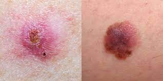

Skin Cancer Facts and Statistics: What You Need to Know
By swati baretha on November 15, 2022 Medically reviewed by William Truswell, MD
Skin cancer is the most common cancer in the United States.1 About 5 million people get treatment for skin cancer each year.2 An estimated 99,780 people will get a new diagnosis of melanoma in 2022.3 It's the least common yet deadliest form of skin cancer. This article will highlight important facts and statistics you should know about skin cancer.
Skin Cancer Overview
Cancer happens when cells start to grow out of control. In skin cancer, this process begins in skin cells. There are several types of skin cancer, including:4 Squamous cell carcinoma: Starts in the thin, flat cells that make up the skin's surface Basal cell carcinoma: Starts in the round cells just under the squamous cells Melanoma: Starts in melanocytes, cells in the lower part of the epidermis that produce pigment

How Common Is Skin Cancer?
Basal cell carcinoma is the most common, with an estimated 3.6 million cases yearly. Squamous cell carcinoma is second, with about 1.8 million cases each year.5 Skin Cancer Foundation. Our new approach to a challenging skin cancer statistic. There are no numbers for non-melanoma skin cancers because they don't have to be reported to cancer registries. About 99,780 people will be diagnosed with invasive melanoma in 2022. Another 97,920 will be diagnosed with in-situ melanoma.6 That means it's non-invasive or stage 0.7 Age-adjusted rates for new cases of melanoma rose an average of 1.2% each year from 2010 to 2019.8
Skin Cancer by Ethnicity
The lifetime risk for developing melanoma is about:9 1 in 38 White people 1 in 167 Hispanic people 1 in 1,000 Black people Skin cancer represents about:10 2% to 4% of all cancers in Asian people 4% to 5% of all cancers in Hispanic people 1% to 2% of all cancers in Black people People of color are less likely to get skin cancer but more likely to die from it.11 This may be due, in part, to different presentations and delayed diagnosis.
Skin Cancer by Age & Gender
One in five Americans will develop skin cancer by age 70.10 About 300 children get a diagnosis of melanoma every year.12 Sun damage adds up throughout your lifetime, so the risk of skin cancer increases with age.9 Anyone can develop melanoma, but the average age at diagnosis is 65. At the same time, it's one of the most common cancers in adults younger than 30, especially women.9 Men aged 49 and under are more likely to get melanoma than any other type of cancer. Women aged 49 and under are more likely to develop melanoma than any other cancer except breast and thyroid cancers. After 50, men are much more likely to develop melanoma than women.10 At age 65, men are two times more likely to get melanoma than women in that age group. By age 80, men are three times more likely to get it. Men are also more likely to die of the disease.13 Some possible reasons for these age and gender differences are: Indoor tanning: Younger people may be more likely to use tanning beds.14 Prevention: Men may not know as much about skin cancer and may take fewer precautions.13 Skin differences: Men’s skin may be more susceptible to the sun’s ultraviolet (UV) rays
Causes of Skin Cancer and Risk Factors
Light skin color is a major risk factor for all types of skin cancer. Some others are:6 Excess exposure to UV radiation from sunlight or indoor tanning Personal history of skin cancer or precancerous lesion Family history of skin cancer Weakened immune system Advanced age Having large or atypical moles Having more than 50 moles A "base tan" won't protect you from the sun's UV rays. That change in color means that you already have some skin damage
What Are the Mortality Rates for Skin Cancer?
It's important to remember that basal and squamous cell skin cancers don't have to be reported to a cancer registry, so statistics are estimated. The mortality rates for non-melanoma skin cancers are low and have been declining in recent years. However, an estimated 2,000 people die each year from these skin cancers.16 About 7,650 people will die from melanoma in 2022. However, age-adjusted death rates for melanoma fell an average of 3.2% each year from 2010 to 2019. In addition, survival rates highlight the benefit of early diagnosis. The five-year relative survival rate by stage at diagnosis is:8 99.5%: Localized 70.6%: Regional spread 31.9%: Distant spread 90.2%: Unknown stage
Screening and Early Detection
Screening means you're looking for evidence of specific cancer even though there are no symptoms. It's also important to see a healthcare provider when you have changes to your skin. Regular skin exams are essential if you've previously had skin cancer.18 Early detection allows you to start treatment before it spreads. The first step is a visual examination of the skin to look for abnormal moles, birthmarks, or other pigmented areas. Changes in size, shape, texture, or color may signify skin cancer. But the only way to confirm skin cancer is to perform a skin biopsy. Research suggests that 44.5% of skin biopsies come back positive for cancer.19
Summary
Skin cancer is the most common type of cancer in the United States. There are several types, with basal cell carcinoma being the most common. Melanoma is the deadliest type. The lifetime risk of developing skin cancer is higher in White people, but Black people are more likely to die from it. Anyone can get it, but the risk increases with age. Exposure to UV rays from the sun or indoor tanning is a significant risk factor. However, when caught early, the survival rate for skin cancer is high
Sanjeevani aims to provide overall health
welfare and awareness and to cover
the gap between the peoples and the
medications
+91 8827343481
sb360879@gmail.com

NewsLetter
Subscribe to our weekly Newsletter and receive updates via email.
All Rights Reserved @ Sanjivani 2023
Terms and conditions